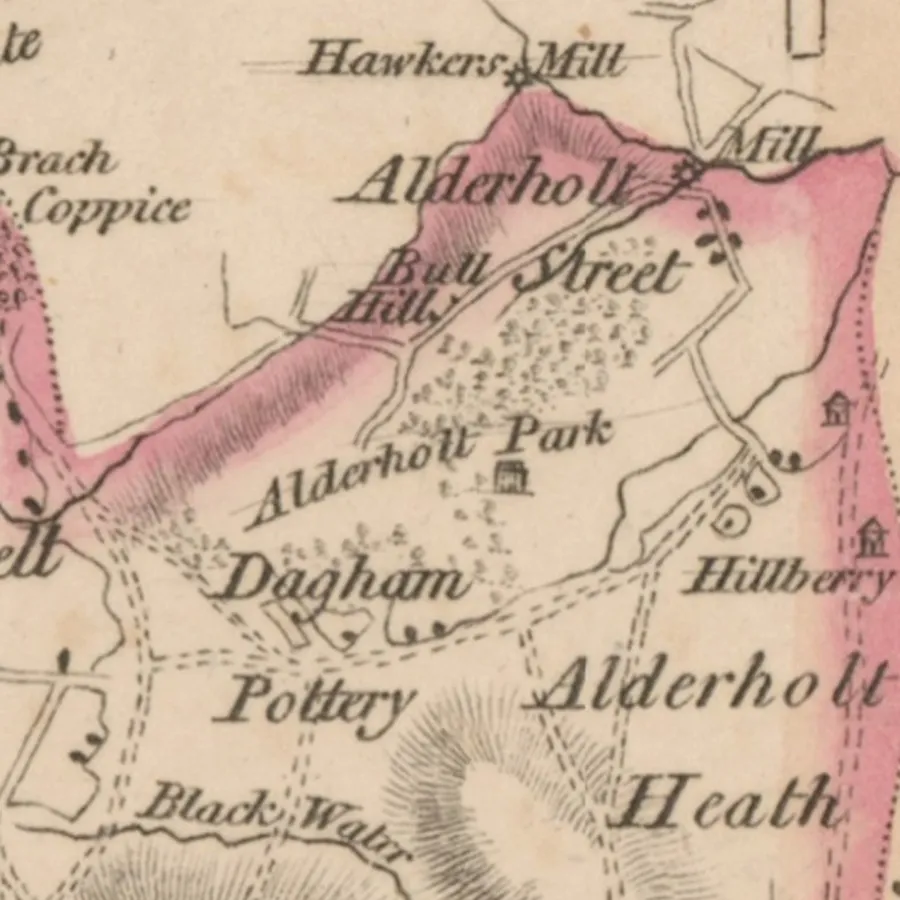
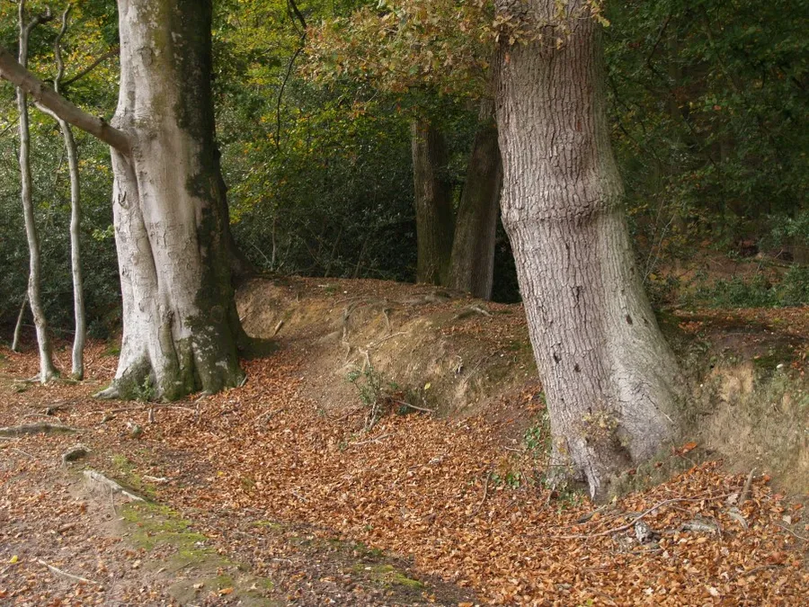
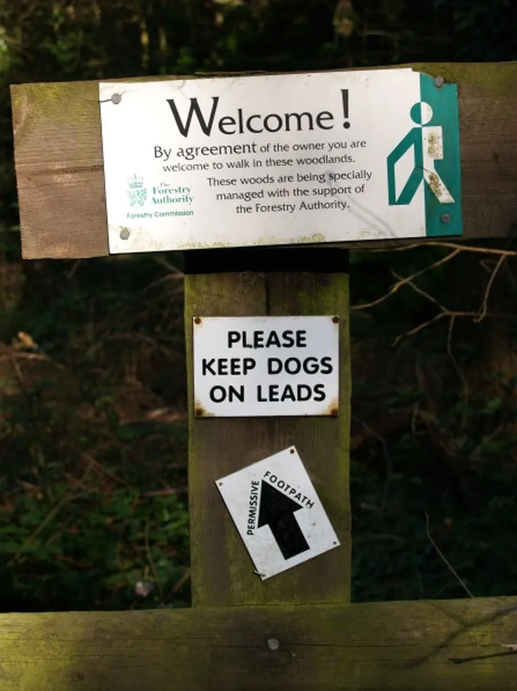
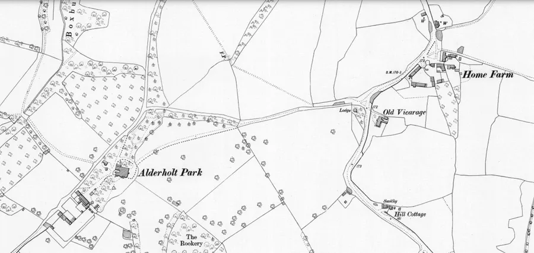
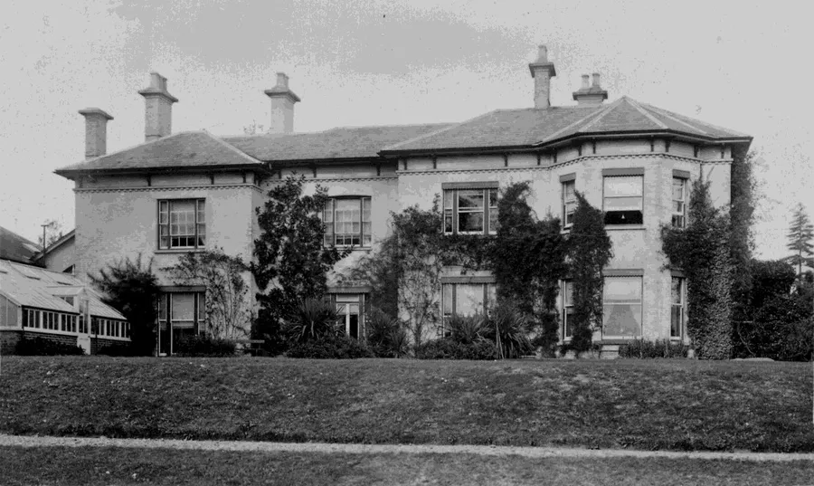
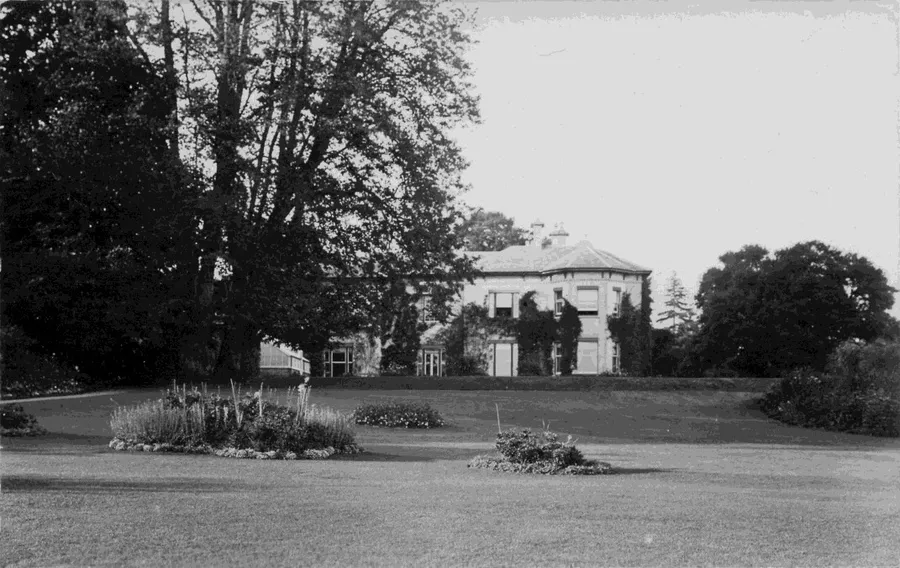
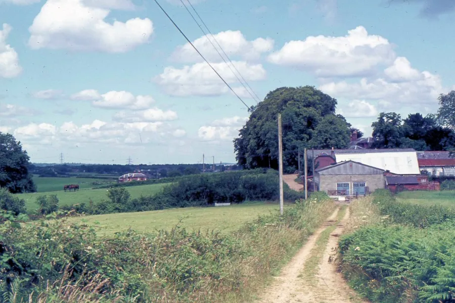

Alderholt Park and House
by Adrian King

Originally a Walk of the Chase Alderholt later became a Manor. Alderholt Park was one of nine parks for the preservation of deer in the out-grounds of Cranborne Chase.
- Wardour, Wilts
- Wilton, Wilts
- Falston, Wilts
- Breamore, Hants
- Burgate, Hants
- Rockbourne, Hants
- Alderholt, Dorset
- Blagden, Dorset
- Gunville, Dorset
Previous versions of the name are
- Parc’ de Alreholt(e) 1285 and 1324
- Alderholt Parke 1583
- Alderholt Parcke 1621
- The Park 1845
- Aldersholt Park Mansion 1845
In the reign of Edward II in 1315 it was ‘Held by Gilbert de Clare of the King; there were in the park of Alderholt, within ditch, by estimation, 154 acres.’ Another estimation was 230 acres.

In the time of Richard II (1377–1400) Edmund Mortimer was Head Forester and Keeper of the Chase of Cranborne. He was the brother of Roger Mortimer the Earl of March and also Chief Superintendent/Warden of the parks at Blagden and Alderholt.
It is still possible to see the remains of the ditch if you take the public footpath No. 30 that runs behind the old Surplus Stores site. The bank and ditch (SU1142512783) are now a Scheduled Ancient Monument (1002394) and was first listed on 20th August 1976.

After 2000, a portion of High Wood north of the banks was opened up to walkers. In 2020 Pennyfarthing Homes were developing locally when they applied (3/20/1732/Ful) for the use of High Wood as a Suitable Alternative Natural Greenspace (SANG) and planned to maintain it.

Tony Light says that one of the Park Keepers duties was to supervise the sale of large acreages of under-wood each year and also to watch over the tenants’ horses which were sometimes pastured there.

Early Ownership
Edward IV (1461-70 and 1471-83) had Alderhold.
In the reign of Henry VIII in the 1530’s it was disparked and the deer were destroyed.
During the reign of Edward (1537-53) the foresters at Alderholt were complaining that they were no longer receiving the ancient yearly due of 3s 6d from the Nuns of Shaftesbury and the twice weekly due from the Cell of Cranborne.
Enclosed lands called Alderholt Park were granted to Anthony Gooche in the reign of James I (1603-1625).
It has been owned privately since then.

Private Owners
In 1854 Mr. George Churchill bought the park and in the 1920’s his godson Major Mackintosh owned it. The house built in 1810 has two storeys with attics and is constructed from brick with slate covered roofs. It has a classic U plan. The east front of the original dwelling appears to have been symmetrical and of three bays with a round headed central doorway and square headed three light sash windows. Later in the 19th century the house was extended on the south and west, the windows were altered, and the roof rebuilt.

The new house and park were put on the market for rent in 1828. An article in The Salisbury and Winchester Journal 19th May 1828 states.
DORSETSHIRE. ALDERHOLT PARK NEAR FORDINGBRIDGE
TO be LET for a Term of Years. The above desirable SPORTING RESIDENCE fit for the accommodation of a genteel Family, together with about 30 Acres of Pastureland surrounding the house, Orchard and Garden. The Mansion consists of dining, drawing, and breakfast rooms on the ground floor, with kitchen, servants’ hall, housekeeper’s room, capital cellars, and all necessary offices. On the second floor eight [large] bedrooms and water closet; detached are excellent stabling for six horses and good coach house.
The house is pleasantly situated on an eminence and is well supplied with good water. The Tenant would have the right of Sporting over considerable extent of country, well stocked with every description of Game. Alderholt Park is distant about 2 miles from Fordingbridge, 6 miles from Ringwood and 14 miles from Salisbury.
Particulars may be known by application at the Mansion house or at the Office of Messrs White Blake and Houseman, 14 Essex street, Strand, London, if by letter, postpaid. To be LET also at a moderate rent and entered on immediately. — The FARM adjoining the above, consisting of about 230 Acres of Arable, Meadow, and Pastureland; together with all necessary outbuildings, very compact, and a comfortable house. — To view the same apply to the Bailiff on the Estate.
A sales brochure deposited with the Historic England Archive in 1968 lists as Alderholt Park Estate properties
- East Lodge
- Park Farm
- Keepers Cottage
- Head Gardeners Cottage
- North Lodge
- South Lodge
- Alderholt Mill Farm
- Church Farm
- Hillcrest
- The Old Brickyard, Daggons Road

Squires
- John Garrett 1518?
- Anthony Gooche 1566
- George Reade 1750
- Jonathan M. Key 1841
- George Churchill 1811–89
- George Onslow Churchill 1889
- Major Charles Henry Stilwell 1927
- Major William Alexander Onslow C. Mackintosh 1920, 1939
- Ian Mackintosh
- Major Kimball
- Dr. R. Grant
- Mr. Burton